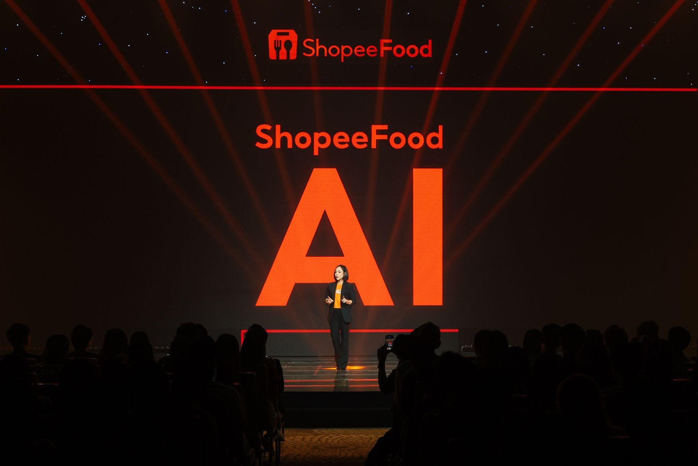
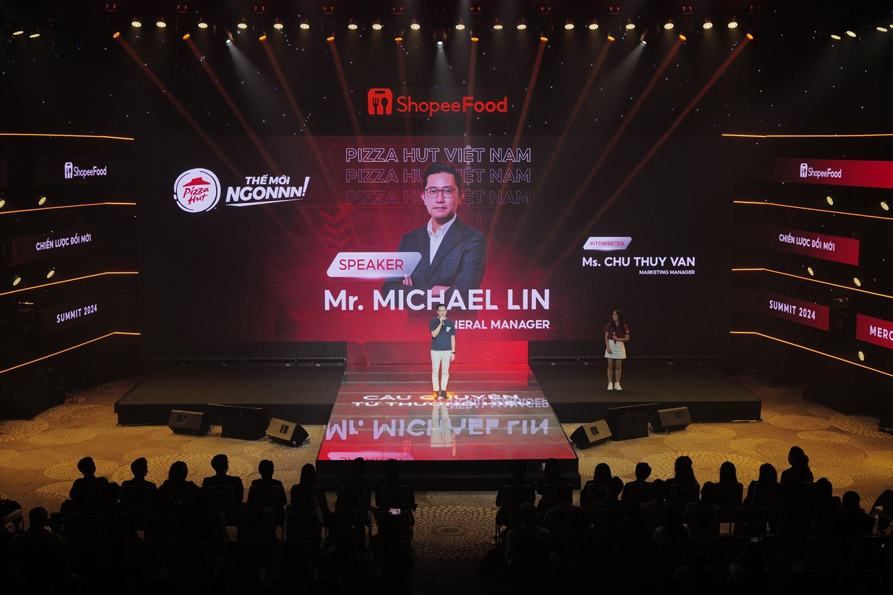
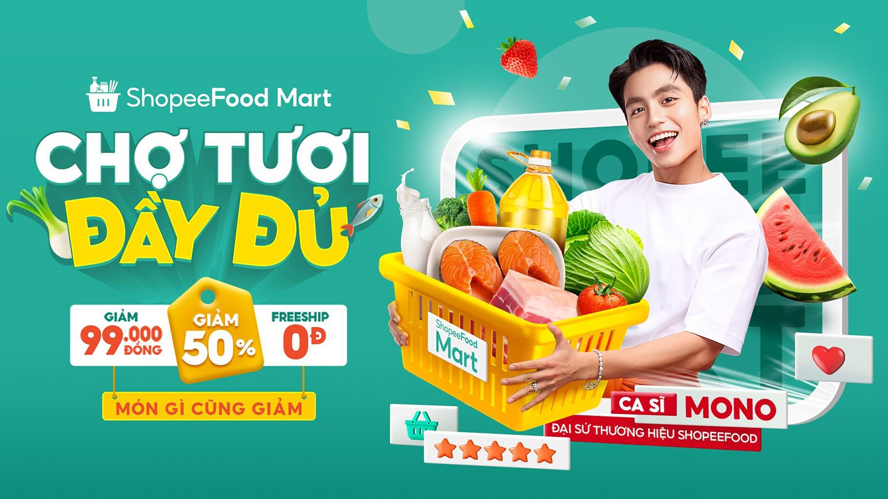
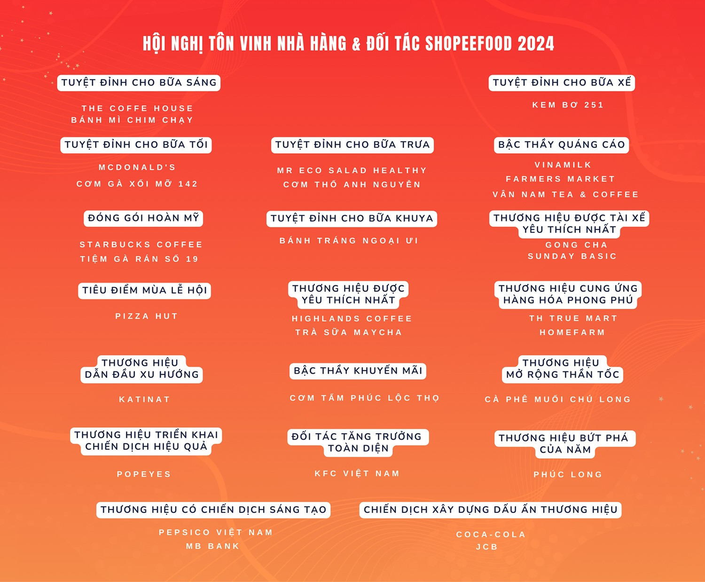
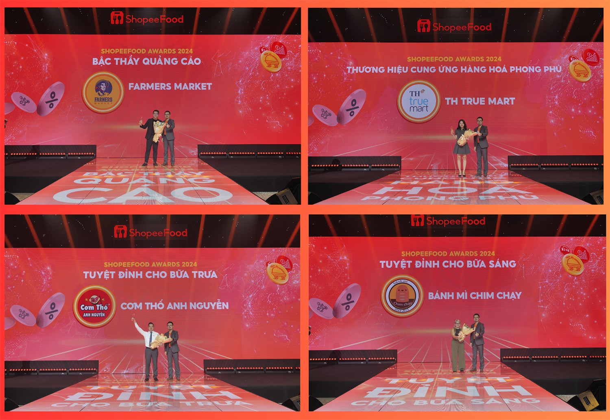

Hội nghị Tôn vinh Nhà hàng & Đối tác ShopeeFood 2024 lần thứ 2 với chủ đề “Bứt phá giới hạn - Beyond Limits” là dịp để nền tảng cùng các đối tác nhìn lại hoạt động kinh doanh trong hơn một năm qua, đồng thời cùng nhau thảo luận về các giải pháp cho những hoạt động thúc đẩy kinh doanh trong nửa cuối năm 2024. Ngoài ra, sự kiện năm nay cũng vinh danh 30 nhà bán hàng, đối tác và thương hiệu có thành tích nổi bật nhất trong năm 2023 và nửa đầu năm 2024 với 19 hạng mục giải thưởng khác nhau.
Nổi bật tại hội nghị, phần giới thiệu sáng kiến kinh doanh và tính năng mới trên ShopeeFood đón nhận nhiều sự quan tâm của các đại diện thương hiệu F&B và đối tác thanh toán. Cụ thể, trong thời gian vừa qua, ShopeeFood tập trung đầu tư mạnh mẽ vào việc nghiên cứu và phát triển các tính năng sử dụng công nghệ AI để đưa ra các đề xuất mang tính cá nhân hóa cho từng khách hàng. Điều này giúp cải thiện tỉ lệ chuyển đổi đơn hàng và hỗ trợ đối tác gia tăng doanh thu bán hàng trên ShopeeFood.
Từ việc linh hoạt kết hợp ứng dụng công nghệ AI vào chiến lược phát triển, ShopeeFood ghi nhận những kết quả kinh doanh rất khả quan. Cụ thể, bên cạnh việc mở rộng dịch vụ khi nâng tổng số tỉnh thành có mặt ShopeeFood lên con số 28 tỉnh, tiếp cận thêm 4,1 triệu người dùng tiềm năng trên cả nước, ShopeeFood còn hỗ trợ các nhà bán hàng khu vực cận trung tâm tiếp cận tối đa tệp khách hàng mới đầy tiềm năng và giúp đối tác tăng trưởng vượt bậc trong các chiến dịch mua sắm so với trung bình ngày thường.
“Việc ứng dụng trí tuệ nhân tạo giúp ShopeeFood hiểu và đánh giá chính xác hơn sở thích, cũng như sự thay đổi nhu cầu và thói quen ăn uống trong cuộc sống hằng ngày của khách hàng, từ đó đưa ra những gợi ý phù hợp nhất giúp gia tăng tỷ lệ chuyển đổi và tăng trưởng doanh thu cho nhà bán hàng, với tỷ lệ dự đoán chính xác đạt con số gần như tuyệt đối.” - Đại diện từ ShopeeFood cho biết.
Ông Michael Lin - Tổng Giám Đốc Pizza Hut Việt Nam cũng chia sẻ thêm: “Thật vinh dự khi ở đây ngày hôm nay để chia sẻ về hành trình đáng nhớ khi chúng tôi hợp tác cùng ShopeeFood trong thời gian qua. Chúng tôi đã đạt được những thành tựu quan trọng không chỉ giúp tăng trưởng kinh doanh mà còn mang đến những cải tiến đột phá trong việc vận hành.”
Cụ thể, Pizza Hut Việt Nam không chỉ ghi nhận mức tăng trưởng ấn tượng về đơn hàng và doanh thu trung bình mỗi ngày mà đối tác còn ghi nhận lượt truy cập vào các cửa hàng tăng lên đáng kể. Bên cạnh đó, nhờ vào việc tích hợp hệ thống giữa Pizza Hut Việt Nam và ShopeeFood, đối tác đã tiết kiệm khá nhiều thời gian mỗi tuần cho việc điều chỉnh và cập nhật thực đơn trên ShopeeFood.
Với xu hướng đặt món tăng cao mùa cuối năm, ShopeeFood tiếp tục ra mắt 3 dịch vụ quảng cáo mới trong năm nay nhằm cung cấp thêm các giải pháp tiếp cận khách hàng hiệu quả hơn cho đối tác, bao gồm Quảng cáo tìm kiếm, Quảng cáo đề xuất và Banner quảng cáo.
Theo đó, với tính năng Quảng cáo tìm kiếm, ShopeeFood sẽ đề xuất các từ khóa để chạy quảng cáo dựa trên thực đơn của quán. Với tính năng Quảng cáo đề xuất thì gian hàng của các đối tác sẽ được ưu tiên hiển thị ở vị trí tốt hơn trong các bộ sưu tập và trên trang chủ ShopeeFood. Ngoài ra, các gian hàng có thực đơn và khuyến mãi phù hợp với nhu cầu khách hàng sẽ được ưu tiên hiển thị trong mục "Gần tôi". Tính năng Banner quảng cáo sẽ mang đến giải pháp tối ưu để tăng cường nhận diện thương hiệu và quảng bá sản phẩm mới.
Không dừng lại ở đó, ShopeeFood cũng tiếp tục khai thác tối đa lợi thế của hệ sinh thái Shopee - ShopeeFood - ShopeePay để tiếp cận đến lượng khách hàng lớn hơn, đồng thời gia tăng khối lượng và giá trị voucher dành cho người dùng tương thích theo từng khu vực.
“Là người bạn đồng hành đáng tin cậy, chúng tôi sẽ luôn cố gắng cải thiện dịch vụ và đem đến những giải pháp toàn diện nhất cho Đối tác nhằm nâng cao trải nghiệm của người dùng và hỗ trợ đối tác kinh doanh bắt nhịp với xu thế thị trường F&B, tự tin đón sóng tăng trưởng vào giai đoạn cao điểm cuối năm và các dịp lễ Tết.” - Đại diện từ ShopeeFood cho biết thêm.
Cũng trong khuôn khổ sự kiện lần này, ShopeeFood tiếp tục vinh danh các đối tác nổi bật với 19 hạng mục giải thưởng. Bên cạnh việc xuất hiện nhiều gương mặt mới tại các hạng mục giải thưởng, thì Hội nghị năm nay còn ghi nhận số lượng các thương hiệu trong nước (local brand) gia tăng đáng kể, điển hình như thương hiệu Bánh mì chim chạy, Cơm gà xối mỡ 142, Bánh tráng Ngoại Ưi,..
Đại diện ShopeeFood bày tỏ lòng tri ân sâu sắc tới các nhà hàng và đối tác đã tin tưởng lựa chọn và đồng hành cùng nền tảng suốt nhiều năm qua. Đơn vị khẳng định sẽ tiếp tục mang đến nhiều đổi mới về mặt công nghệ, nâng cấp mảng vận hành để tối ưu hóa hiệu quả kinh doanh cho cộng đồng nhà hàng và đối tác hiện đang hoạt động trên ShopeeFood theo hướng dài hạn.
“Với giải thưởng Thương hiệu cung ứng hàng hóa phong phú của ShopeeFood, TH True Mart càng thêm tự tin vào chiến lược phát triển bền vững của mình, chúng tôi sẽ tiếp tục nỗ lực để mang lại những giá trị tốt nhất cho khách hàng và cộng đồng. Đây là bước đệm quan trọng không chỉ giúp nâng cao vị thế của TH True Mart trên thị trường mà còn mang lại nhiều thành công và giải thưởng lớn hơn trong tương lai.”, đại diện Tập đoàn TH chia sẻ thêm tại sự kiện.